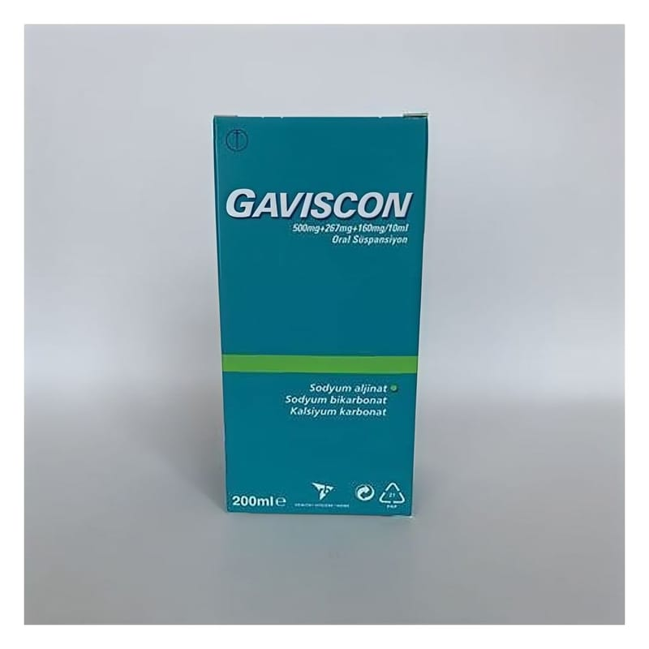

Gaviscon 500 mg+267 mg+160 mg/10 ml Oral Süspansiyon (200 ml)

Ne için kullanılır
KT · Bölüm 1GAVISCON; krem renkli, nane kokulu bir sıvıdır. GAVISCON; karton kutu içerisinde amber renkli 200 ml’lik şişede temin edilir. GAVISCON, reflü özofajit (yemek borusu iltihabı) kaynaklı şikayetleri olan hastalarda, gebelikte ya da yemeklerden sonra oluşan (reflüden kaynaklanan) hazımsızlık, mide yanması ve mideden ağza asit gelmesi gibi gastroözofageal reflü (mide ve yemek borusu iltihabı) belirtilerinin tedavisinde kullanılır.